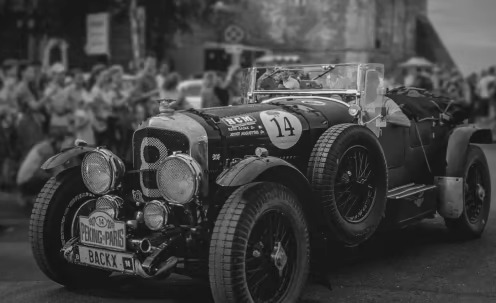

MY EXPERIENCE
Political Columnist @ World Politics
Digest
Jan 2018 - Present I write political opinion pieces and reports on the U.S.’s most recent political events. My goal was and is to bring articles and news without partisan bias while offering insight and analysis.
On-Site Journalist @ Italian Fashion
Digest
Jan 2018 - Feb 2019 I walked the red carpet, spoke with designers, and provided in-depth insights on each participant’s collections and their inspirations for the multiple fashion events taking place across Italy.
EDUCATION AWARDS
Oxford University Journalistic Investigation Excellence
for fashion week coverage press on image below
For an investigative piece into the history of gerrymandering and its consequences. National Media Award For an investigation into small government corruption.
For an investigative piece into the history of gerrymandering and its consequences. National Media Award For an investigation into small government corruption.
For an investigative piece into the history of gerrymandering and its consequences.
National Media Award
For an investigation into small government corruption.